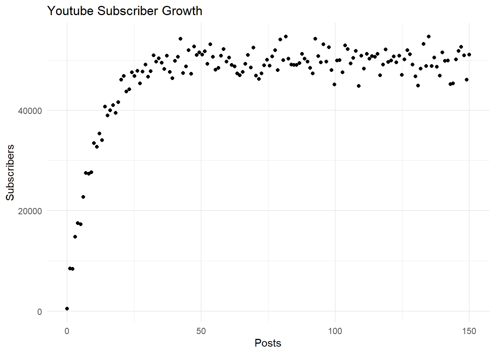
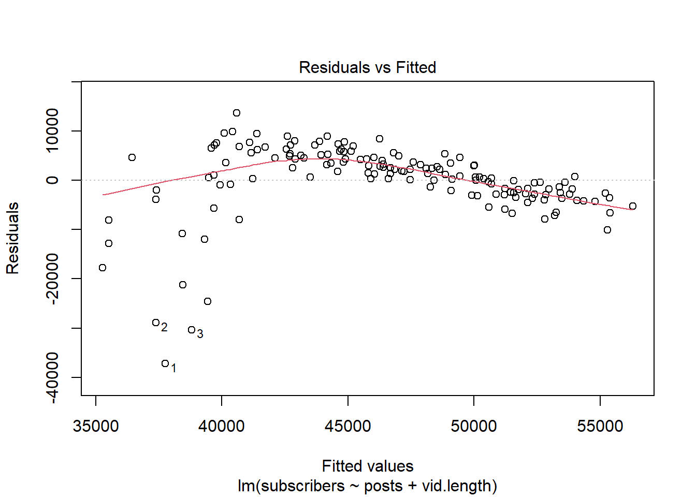
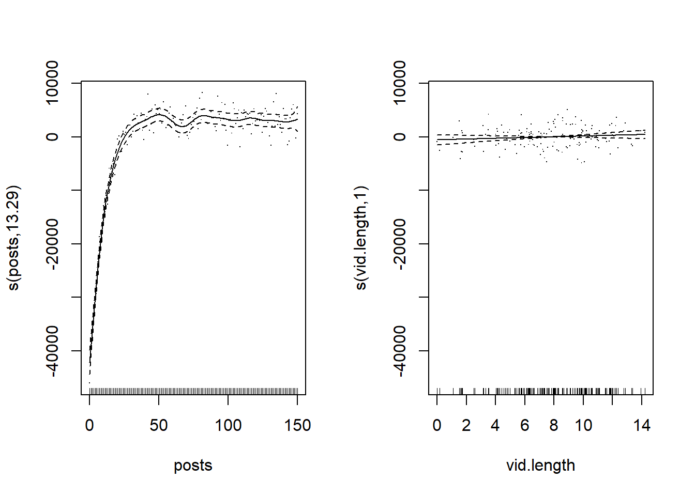
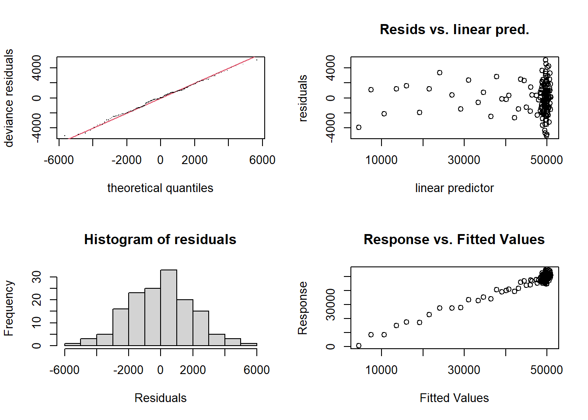
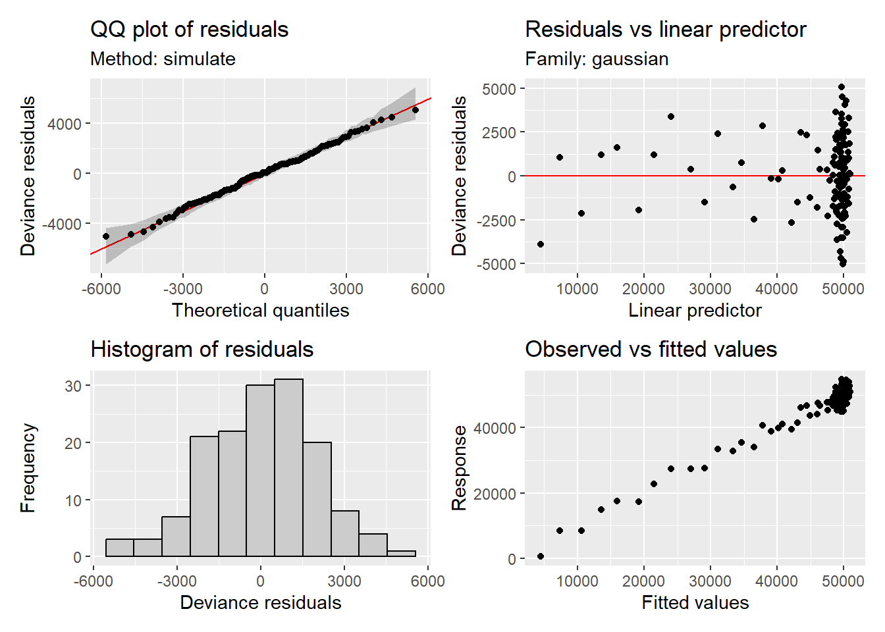
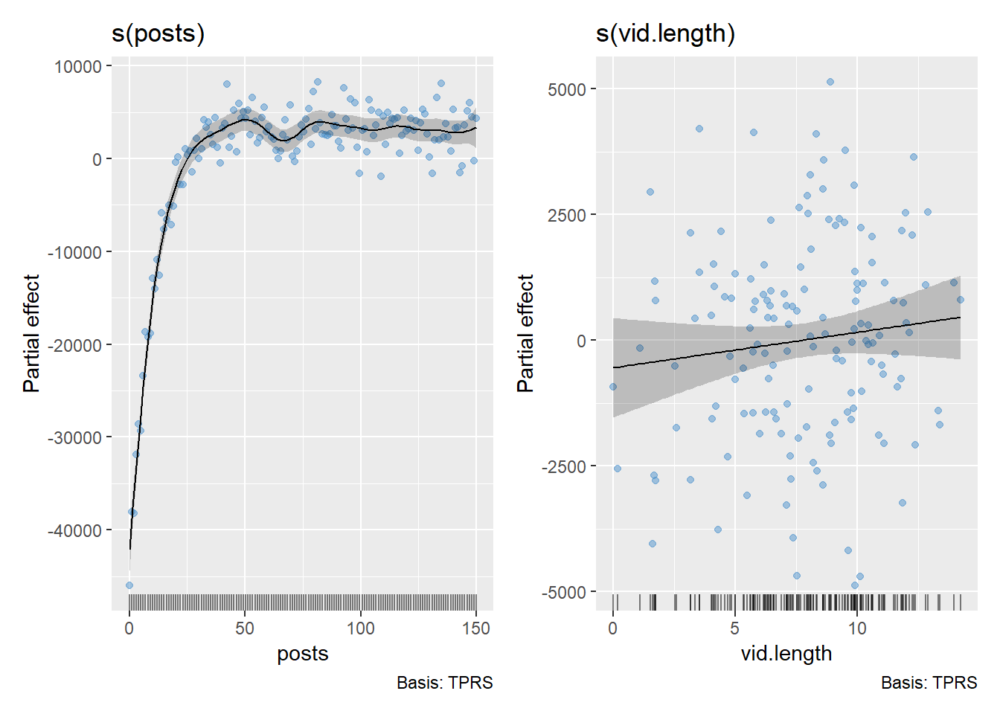
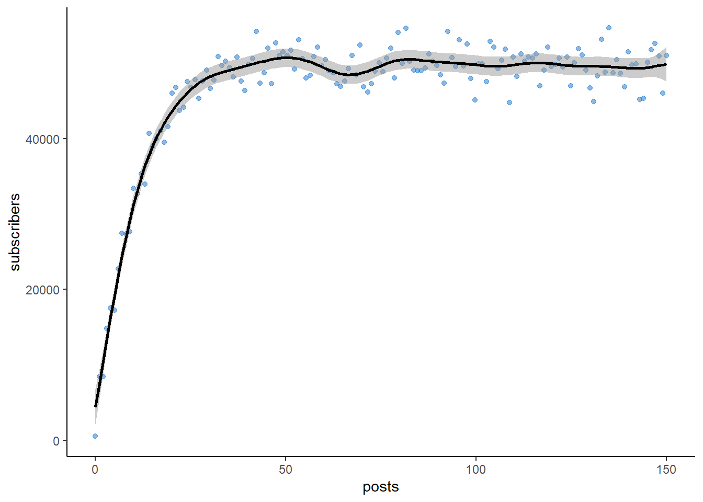

Here, we will explore Generalized Additive Models (GAMs) in R using the {mgcv} package (Wood 2017). We will generate data for a baker who is passionate about sharing her love for baking and starts posting videos on a YouTube account. One of her first ‘how-to’ videos goes viral and she quickly gains over 50,000 subscribers!
To start, we will load our packages using library(). If
you do not have one or more of these packages, you can use the function
install.packages().
library(mgcv) # For fitting GAMs
library(ggplot2) #For plots
library(gratia) # For GAM validation
library(ggeffects) # For plotting model predictions Let’s generate our data and take a look at the columns. In our data
frame, we will include the number of Youtube subscribers
(subscribers), number of video postings
(posts), and the length of the video in minutes
(vid.length).
#Reproducibility
set.seed(15)
#Generate a dataframe
df <- data.frame(subscribers =
pmax(50000 * (1 - exp(-0.1 * seq(0, 150, length.out = 150)))
+ rnorm(150, mean = 0, sd = 2000), 0),
posts = seq(0, 150, length.out = 150),
vid.length = pmax(rnorm(150, mean = 8, sd = 3), 0))
#Examine the first 6 rows of data
head(df) subscribers posts vid.length
1 517.6457 0.000000 7.366206
2 8450.7240 1.006711 6.442278
3 8439.1367 2.013423 8.921410
4 14827.9893 3.020134 9.907846
5 17549.8854 4.026846 1.699380
6 17264.2917 5.033557 7.572589Let’s go ahead and plot the data using the {ggplot2} package (Wickham 2016) to get an idea of the relationship between the number of subscribers and posts, which we will focus on throughout this tutorial.
ggplot(df, aes(x = posts, y = subscribers)) +
geom_point() +
labs(x = "Posts", y = "Subscribers", title = "Youtube Subscriber Growth") +
theme_minimal()
Let’s first try fitting a linear model to the data and then check the summary to see the results. The number of subscribers to YouTube will be predicted by the number of posts and video length.
#Fit a linear model
lm <- lm(subscribers ~ posts + vid.length, data = df)
#Check the linear model summary
summary(lm)
Call:
lm(formula = subscribers ~ posts + vid.length, data = df)
Residuals:
Min 1Q Median 3Q Max
-37241 -2768 913 4581 13646
Coefficients:
Estimate Std. Error t value Pr(>|t|)
(Intercept) 33920.7 1994.1 17.010 < 2e-16 ***
posts 114.5 13.9 8.234 9.01e-14 ***
vid.length 521.1 197.4 2.640 0.00918 **
---
Signif. codes: 0 '***' 0.001 '**' 0.01 '*' 0.05 '.' 0.1 ' ' 1
Residual standard error: 7411 on 147 degrees of freedom
Multiple R-squared: 0.3311, Adjusted R-squared: 0.322
F-statistic: 36.38 on 2 and 147 DF, p-value: 1.457e-13We can see that the predictor posts is significant. We
will evaluate model performance by looking at the plot of residuals
against the fitted values.
plot(lm, which = 1)
We see that this model does not perform very well with our data. The residuals have a clear pattern, highlighting that our model may not be capturing the structure of the data. Since the residuals display a non-linear pattern, we will fit a GAM to better capture the non-linearity.
We will use the gam() function in the {mgcv} package to
fit a GAM and add s() around our predictors to specify a
smoothing term for them. We are going to specify the argument
k = 9 to tell {mgcv} how ’wiggly` we think the smooth
should be, or how many basis functions can be used. The default value of
k is 10 for these smooths.
We will look at the summary to check the model output.
#Fit a GAM
gam1 <- gam(subscribers ~ s(posts, k = 9) + s(vid.length),
method = "REML", data = df)
#Check the summary of our GAM model
summary(gam1)
Family: gaussian
Link function: identity
Formula:
subscribers ~ s(posts, k = 9) + s(vid.length)
Parametric coefficients:
Estimate Std. Error t value Pr(>|t|)
(Intercept) 46562.5 187.6 248.2 <2e-16 ***
---
Signif. codes: 0 '***' 0.001 '**' 0.01 '*' 0.05 '.' 0.1 ' ' 1
Approximate significance of smooth terms:
edf Ref.df F p-value
s(posts) 7.795 7.986 262 <2e-16 ***
s(vid.length) 1.002 1.004 0 0.999
---
Signif. codes: 0 '***' 0.001 '**' 0.01 '*' 0.05 '.' 0.1 ' ' 1
R-sq.(adj) = 0.935 Deviance explained = 93.9%
-REML = 1370.6 Scale est. = 5.2796e+06 n = 150We can see that our smooth for posts is statistically
significant and the deviance explained is high (94%) showing we were
able to explain the variation in our data well.
Importantly, smooths in a GAM are created by combining smaller
functions called basis functions. In this way, a non-linear relationship
between our independent and dependent variable has many parameters that
collectively create the overall smoothed shape we get for each term we
have specified a smooth for. However, we need to make sure our smoothing
terms are flexible enough to model the data as the basis dimensions
define how ‘wiggly’ the smooth function can be. We will check if the
basis size of our smoothing terms (k) is sufficient. To do this, we will
use the function k.check() on our GAM.
k.check(gam1) k' edf k-index p-value
s(posts) 8 7.794714 0.8666983 0.0525
s(vid.length) 9 1.002067 1.0647945 0.7800Notably, we can see that for posts, our k’ and edf
values are close to each other. The p-value for this smooth is also low
and the k-index falls below 1. These signs (1. a low p-value; 2. k’ and
edf close in value to each other; 3. k-index below 1) indicate that our
basis dimension (k) may be too low, and our model may benefit from a
higher k value. We can increase the k value by doubling it and seeing if
our edf value increases.
We will refit the GAM, specify a higher k value and call
k.check() again.
#Specify a GAM where `posts` has a k value of 18
gam2 <- gam(subscribers ~ s(posts, k = 18) + s(vid.length),
method = "REML", data = df)
#Check the basis size of our smoothing terms for `gam2`
k.check(gam2) k' edf k-index p-value
s(posts) 17 13.291363 1.069912 0.7750
s(vid.length) 9 1.001513 1.114679 0.9175We can now see that for posts, our k’ and edf values are
farther apart, our p-value is higher, and our k-index value is
approximately 1.
We can also fit a linear model with gam() by leaving out
the smoothing function. We will give it a try for comparison.
#Fit a linear model using `gam()`
lm <- gam(subscribers ~ posts + vid.length, data = df)
#Check the summary of `gam.lm`
summary(lm)
Family: gaussian
Link function: identity
Formula:
subscribers ~ posts + vid.length
Parametric coefficients:
Estimate Std. Error t value Pr(>|t|)
(Intercept) 33920.7 1994.1 17.010 < 2e-16 ***
posts 114.5 13.9 8.234 9.01e-14 ***
vid.length 521.1 197.4 2.640 0.00918 **
---
Signif. codes: 0 '***' 0.001 '**' 0.01 '*' 0.05 '.' 0.1 ' ' 1
R-sq.(adj) = 0.322 Deviance explained = 33.1%
GCV = 5.6049e+07 Scale est. = 5.4928e+07 n = 150Or, we could add a smoothing term and a linear term in the model by
including s() only around the terms we would like to
specify a smooth for.
gam.lm <- gam(subscribers ~ s(posts) + vid.length,
method = "REML", data = df)
summary(gam.lm)
Family: gaussian
Link function: identity
Formula:
subscribers ~ s(posts) + vid.length
Parametric coefficients:
Estimate Std. Error t value Pr(>|t|)
(Intercept) 46097.29 510.64 90.27 <2e-16 ***
vid.length 59.74 61.60 0.97 0.334
---
Signif. codes: 0 '***' 0.001 '**' 0.01 '*' 0.05 '.' 0.1 ' ' 1
Approximate significance of smooth terms:
edf Ref.df F p-value
s(posts) 8.74 8.98 270.9 <2e-16 ***
---
Signif. codes: 0 '***' 0.001 '**' 0.01 '*' 0.05 '.' 0.1 ' ' 1
R-sq.(adj) = 0.943 Deviance explained = 94.7%
-REML = 1363.9 Scale est. = 4.5997e+06 n = 150Let’s go back our gam2 model. We will plot the partial
residuals of gam2, which helps us view the relationship
between a predictor variable and the response variable after accounting
for other predictors in the model. We will add the residuals to the plot
by including the argument residuals = TRUE. The vertical
lines along the x-axis represent a rug plot, indicating the distribution
of the covariate shown.
plot.gam(gam2, pages = 1, residuals = TRUE) 
We can also use gam.check() from the {mgcv} package to
assess model diagnostics. The output from gam.check()
includes the information from k.check() at the bottom of
the results.
gam.check(gam2, pages = 1)
Method: REML Optimizer: outer newton
full convergence after 7 iterations.
Gradient range [-0.0006043802,0.0001521058]
(score 1362.221 & scale 4366531).
Hessian positive definite, eigenvalue range [0.0006038669,74.04975].
Model rank = 27 / 27
Basis dimension (k) checking results. Low p-value (k-index<1) may
indicate that k is too low, especially if edf is close to k'.
k' edf k-index p-value
s(posts) 17.0 13.3 1.07 0.76
s(vid.length) 9.0 1.0 1.11 0.91To assess model diagnostics, we can also use appraise()
from the {gratia} package (Simpson 2024).
Notably, this package is built on {ggplot2}, allowing for easy editing
of plots using ggplot scripts.
appraise(gam2, method = "simulate")
Within the {gratia} package, we can also plot the partial effect of
the smoothing terms. The smooths are centered around 0 so regions below
0 on the y-axis are less common on average while regions above 0 on the
y-axis are more common on average. We will add the residuals to the plot
by including residuals = TRUE.
draw(gam2, residuals = TRUE)
When specifying multiple smoothing terms, we can also check for
concurvity, which occurs when a smooth term in the model can be
estimated by one or more other smooth terms in the model. High
concurvity can lead to challenges with model interpretation. We can
check concurvity of our model using the {mgcv} function
concurvity(). The function will return values for 3 cases
ranging from 0 - 1 with 1 indicating high concurvity and potential
problems in the model. You can read more about how these cases are
calculated using ?concurvity.
concurvity(gam2) para s(posts) s(vid.length)
worst 2.591343e-22 0.32898939 0.3289894
observed 2.591343e-22 0.08288992 0.1881053
estimate 2.591343e-22 0.05899542 0.1728076While there is currently no defined value for what value is considered ‘high’ concurvity, our worst case estimate is 0.3 with the observed and estimated values falling below this. Here, we will conclude that concurvity is not a concern.
We can also visualize the relationship between posts and subscribers
as predicted by the gam2 model and include the raw data points. We
generate predictions using the ggpredict() function from
the {ggeffects} package (Lüdecke
2018).
predict.df <- ggpredict(gam2, terms = "posts")
ggplot() +
#Raw data points
geom_point(data = df, aes(x = posts, y = subscribers),
color = "dodgerblue3", alpha = 0.5) +
#Confidence intervals
geom_ribbon(data = predict.df, aes(x = x, ymin = conf.low,
ymax = conf.high),
fill = "grey60", alpha = 0.5) +
#Predicted values
geom_line(data = predict.df, aes(x = x, y = predicted),
color = "black", size = 1) +
theme_classic()
We can see the raw data points in blue, while the black line represents the model’s predicted values. The grey shaded area shows the confidence intervals around the predictions, giving us a sense of uncertainty in the model’s fit.